Программный декодер MP3 на STM32F10x. Часть 3. Извлекаем звуки
Пилу на выходе ЦАП увидели (и при желании услышали), теперь хочется
вывести звуки, более приятные для наших ушей. «Музыку давай»! Однако, не
стоит торопиться. Контроллеру нужно предоставить поток MP3, который он
сможет декодировать. Сегодня мы подключим карту памяти SD, освоим
драйвер файловой системы и напоследок — запустим декодер MP3.
Итак, музыкальные файлы будем читать с карты памяти SD. Это удобно, практично и недорого.
1. В нашем проекте заводим ещё одну папку FatFs, в которую помещаем основные файлы библиотеки FatFs: ff.c, ff.h, ffconf.h, integer.h и diskio.h.
2. Выполняем настройку драйвера в файле ffconf.h. Большинство параметров можно оставить пока без изменений. Отдельно только указываем кодовую страницу
3. Описываем аппаратно-зависимые функции доступа к карте памяти. Здесь могут возникнуть некоторые затруднения, — с нуля драйвер для карты писать неблагодарное дело. Однако Martin THOMAS в сообществе с ChaN`ом уже сделали всё за нас. Из архива stm32_chanfat_mthomas_20100704b.zip берём файл sd_spi_stm32.c, это и есть нужный драйвер.
Версия «из коробки» доработок практически не требует, так как она поддерживает и нашу отладочную плату Olimex STM32-P103. Необходимо только обеспечить вызов функции disk_timerproc() с интервалом 10 мс. Например, можно использовать отдельный аппаратный таймер, у нас свободных таймеров предостаточно. Но мы воспользуемся для разнообразия сервисом программного таймера, предоставляемым операционной системой CoOS:
При использовании таймера CoOS не забываем, что callBack-функция disk_timerproc() выполняется в потоке системного прерывания SysTimer. Поэтому она должна быть короткой и быстрой, а также не должна использовать API-функции ОС. Собственно, этим условиям функция вполне удовлетворяет.
Ещё модулю FatFs нужно знать текущее системное время. Это совсем просто:
Однако… Всё же приходится брать в руки напильник. При первом запуске обнаружено, что перепутана полярность сигналов CP (контроль наличия карты памяти в слоте) и WP (Write Protect). Пришлось править функции socket_is_empty() и Socket_is_write_protected().Кто был неправ, другой тип разъёма или ошибка Мартина Томаса, история умалчивает.
upd: в драйвере честно указано, что «Olimex STM32-P103 not tested!»
Контроль времени выполним при помощи аппаратного таймера. Результаты измерений выведем в терминальное окно через отладочный UART.
Проверим возможности по разгону. Сначала укажем _WORD_ACCESS = 1 (не пропадать ведь добру — 32 разрядам контроллера):
А практически ничего не изменилось. Даже стало немного хуже (пока не понял почему, возможно — невыровненный доступ к 32-битным словам). Только прошивка уменьшилась на 532 байта.
Теперь добавим использование DMA (#define STM32_SD_USE_DMA):
Совсем другое дело. SPI работает со скоростью 72/8 = 9 МГц, что примерно соответствует полученной скорости чтения. Не только быстрее читаем, но и экономим процессорное время. Во время транзакции DMA можем вернуть управление операционной системе и занять проц другими полезными делами.
Продолжим эксперименты. Уменьшим порцию чтения до 512 байт:
Скорость упала в 1,5 раза. Увеличились накладные расходы на чтение сектора. Смотрим осциллограмму:
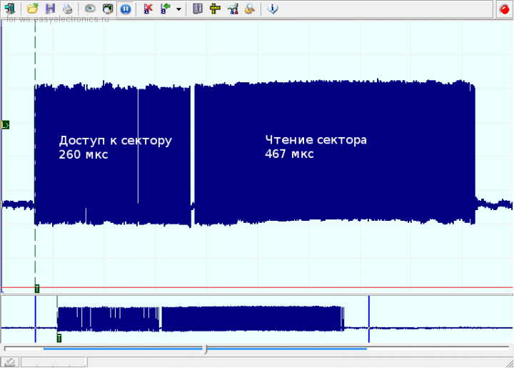
Чтению сектора предшествует операция выбора этого сектора. Причём длительность этого интервала определяется самой картой памяти, драйвер FatFs лишь опрашивает её готовность. Ну а далее выполняется «честное» чтение 512 байт.
Мораль: если нужно максимальное быстродействие, файл необходимо читать блоками максимального размера. Ну собственно, про это и так все знают (или догадываются).
Далее пробуем чтение блоков, невыровненных по границе сектора. Для чего предварительно воспользуемся функцией f_lseek:
Скорость упала, но не существенно. Оказывается, при невыровненном чтении функцией f_read используются результаты предыдущего цикла, которые хранятся в буфере buf файловой структуры FIL. И читать по два сектора каждый раз не нужно, что вполне логично. Значит, при последовательном чтении файла можно особо не беспокоиться о выравнивании порции данных по границе сектора, потери времени будут незначительными.
При рандомном чтении или при использовании опции _FS_TINY читать, конечно, лучше строго по секторам.
Если кто заинтересуется дальнейшими исследованиями, прикладываю проект mp3_player_step3_1.
и наконец, долгожданное…
В далёком 2002 году компания Real Networks предоставила в свободный доступ собственные наработки в традиционной для неё области потокового вещания (см. статью в Компьютерре). Все открытые проекты компания собрала под единым названием «Helix». В частности, были открыты исходники популярного RealPlayer, содержащего в свою очередь, вполне удачный декодер MP3.
На просторах Интернета можно найти ещё несколько бесплатных и открытых декодеров (LibMAD, разработанный примерно в те же годы, есть примеры самодельных плейеров; mpg123 — порта для ARM не видел; ffmpeg — вообще круть, мега аудио-видеокодек, без поллитры не разобраться).
Ну а мы воспользуемся проверенным вариантом — Хеликсом (или, точнее, «Хилексом»).
Копируем в наш проект следующие файлы:
1. Декодер использует память ОЗУ, выделяемую из кучи во время инициализации. За выделение памяти отвечает функция AllocateBuffers в модуле buffers.c. Соответственно в нашем проекте нужно реализовать поддержку функций malloc и free.
Можем использовать соответствующие функции библиотеки newlib либо сторонние библиотеки. CoOS в этом вопросе нам тоже может помочь. Для начала нужно включить поддержку памяти и задать размер области, отводимый для кучи:
Работа с выделяемой памятью в CoOS практически ничем не отличается от стандарного malloc/free, только нужно добавить к названию функций приставку «CoK»:
Чтобы не ломать исходники декодера-Хеликса, определяем функции в отдельном файле heap.h:
Если использование выделяемой памяти нежелательно или проблематично, то в Сети можно найти модификацию модуля buffers.c от Kasper Jepsen со статическими переменными.
2. В алгоритме декодирования используется полифазный фильтр. Это одна из наиболее ресурсоёмких функций декодера. Авторы декодера предлагают несколько вариантов реализации функций PolyphaseStereo и PolyphaseMono в зависимости от аппаратного обеспечения.
Во-первых, есть сишная реализация, файл polyphase.c. Однако она заточена под взрослые процессоры x86 (см. ассемблерные вставки MADD64/SHL64/SAR64). Фтопку его.
Во-вторых, для контроллеров ARM необходимые функции полностью написаны на ассемблере. Нам предлагается на выбор для варианта: asmpoly.s и asmpoly_gcc.s, отличающиеся синтаксисом. Судя по названию, нужно использовать второй. Переименовываем расширение файла в «S», чтобы Eclipse воспринял его как ассемблерный файл. И снова проблема. Не переваривает GCC-компилятор этот файл. Видимо,граната GCC у нас не той системы. Покопавшись в примерах, нашёл подходящий исходник с названием asmpoly_thumb2.S.
И ещё один файл asmmisc.s оказался ненужным. Единственная его функция уже описана в модуле assembly.h. Кроме того, inline-функции (в assembly.h) не требуют лишних команд перехода/возврата и поэтому работают заметно быстрее.
На этом этапе настройку декодера можно считать законченной и приступить к его запуску.
1. Инициализация декодера
2. Деинициализация декодера
3. Поиск следующего фрейма
Возвращает позицию первого байта синхрослова (начала фрейма) относительно начала буфера. Возвращает -1, если синхрослово не найдено.
4. Декодирование заголовка следующего фрейма
5. Декодирование фрейма
Здесь, надеюсь, всё понятно (за исключением флага useSize). Флаг useSize указывает декодеру на использование особого формата упаковки данных RTP (Real-Time Transport Protocol). Для обычных файлов MP3 можно смело указывать useSize=0.
Количество сэмплов (помещаемых в outbuf) на один фрейм фиксировано: для MPEG1 Layer3 оно составляет 1152, для MPEG2/2.5 Layer3 — 576. Сэмплы в буфер outbuf помещаются парами для левого и правого каналов.
6. Чтение параметров последнего фрейма
Количество семплов левого и правого каналов суммируется. Например, после декодирования фрейма MPEG1 Layer3 в буфере будет лежать 1152*2=2304 сэмплов, а минимально необходимый размер буфера соответственно должен составлять 2304*2=4608 байт.
Подробнее про формат заголовка фрейма и про сам формат MP3 можно немного почитать в Википедии и, например, на Хабре.
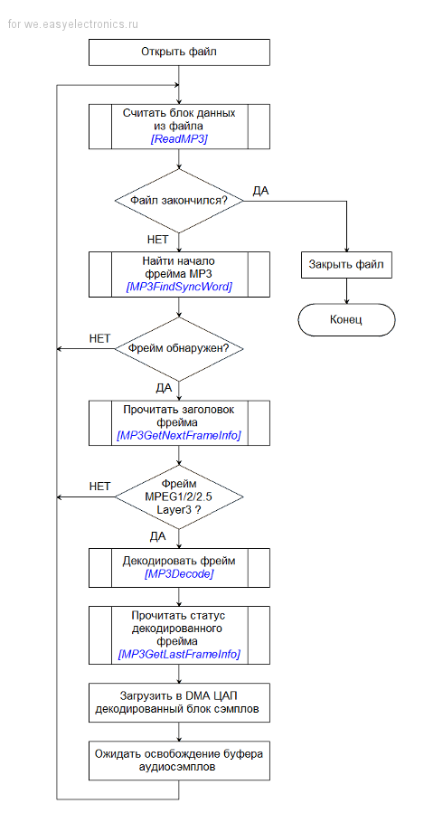
Кстати: формат сэмплов, выходящих из декодера, не подходит для встроенного ЦАП. Декодер даёт знаковые числа -32768..+32767, а ЦАП понимает 0...65535. Поэтому результирующие значения сэмплов перед подачей на ЦАП необходимо сместить на 32768 ед.
Код см. в архиве mp3_player_step3_2.zip. Компилируем, запускаем и анализируем…
При выключенной оптимизации кода (-O0) декодирование требует более 80%, контроллер не справляется с задачей, заикаясь и давясь неоптимизированным кодом. Поэтому обязательно включаем оптимизацию, принося в жертву удобство отладки.
Первый музыкальный фрагмент:
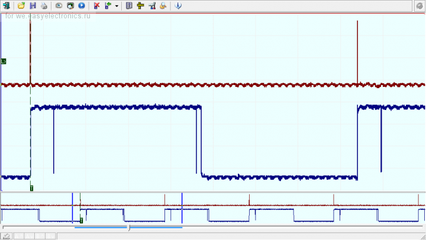
Верхняя трасса — прерывание DMA (освобождение буфера и запрос новых данных). Нижняя трасса отображает время работы MP3-декодера. Результаты курсорных измерений на осциллограмме к сожалению не отображаются, поэтому придётся поверить мне на слово:
Второй музыкальный фрагмент:
Обращаем внимание, что загрузка контроллера при битрейте 320 и 128 кбит/с отличается незначительно.
Третий музыкальный фрагмент:
И в виде графика (указано время выполнения функции MP3Decode в % от 26 мс):
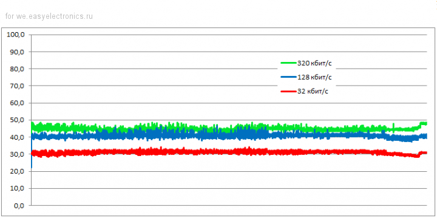
Ну что ж, у нас остаётся ещё примерно 30% свободного процессорного времени. Вполне неплохо. Теперь можно и расслабиться, поморгать светодиодами, нарисовать что-нибудь на LCD-экране, опросить клавиатуру и сделать массу других нужных и ненужных действий.
Продолжаем эксперименты. Воспроизведение файла 320 кбит/с при тактировании 72 МГц (FLASH_LATENCY=2) и 36 МГц (FLASH_LATENCY=0):
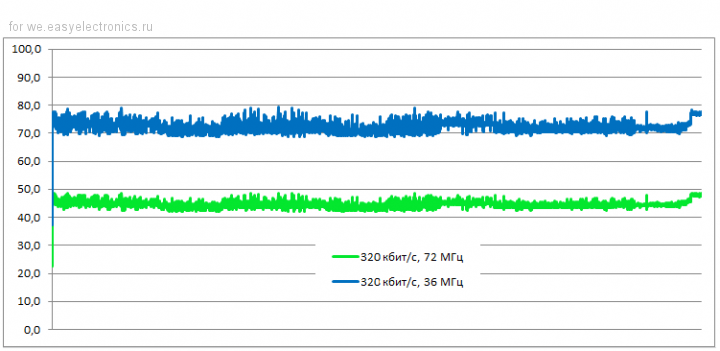
Впритык, но справляется. Оставшиеся 20% ресурсов уходят на чтение файла, обслуживание ЦАП и прочие мелочи.
И напоследок, проверим опции оптимизации компилятора GCC (на файле с битрейтом 32 кбит/с):
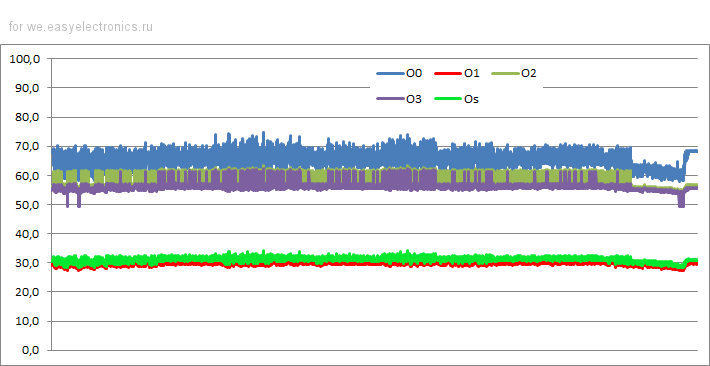
Как видим, опции -O2 и -O3 практически бесполезны. -O1 даёт самый быстрый код, -Os ему мало уступает, экономя однако ещё 10% памяти FLASH. При выключенной оптимизации -O0 контроллер не справится с декодированием высоких битрейтов.
2. Заказал плату STM32F4DISCOVERY. Как придёт, переложу проект на его основу. Интересно будет сравнить его возможности и производительность. Плюс на борту уже имеется аудиоЦАП.
3. Если будет время, можно запустить декодер LibMAD и сравнить его с Helix.
upd
Выкладываю исходники следующей модификации проекта mp3_player_step3_3m.zip. Его отличительные особенности:
Программа проигрывает файлы из директория "/music", при нажатии кнопки переходит к проигрыванию следующего файла. Воспроизведение файлов осуществляется в порядке их размещения на карте памяти. При необходимости проигрывания файлов по алфавиту необходимо предварительно создать список файлов и отсортировать его. Размер списка будет ограничен количеством свободной RAM-памяти.
upd2
Ещё вариант: предварительно составить на Большом Брате плейлист (с помощью того же винампа) и научить наш плейер играть файлы по порядку из этого листа.
Оглавление
Итак, музыкальные файлы будем читать с карты памяти SD. Это удобно, практично и недорого.
Настройка файловой системы
После появления в свободном доступе нескольких замечательных библиотек поддержкой файловой системы в микроконтроллерном устройстве сейчас никого не удивишь. Не будем оригинальничать, и воспользуемся драйвером FatFs от великого ChaN`a. Расписывать достоинства/недостатки и давать описание смысла не вижу, в Сети есть масса подобной и подробной информации. Рассмотрим особенности применения.1. В нашем проекте заводим ещё одну папку FatFs, в которую помещаем основные файлы библиотеки FatFs: ff.c, ff.h, ffconf.h, integer.h и diskio.h.
2. Выполняем настройку драйвера в файле ffconf.h. Большинство параметров можно оставить пока без изменений. Отдельно только указываем кодовую страницу
#define _CODE_PAGE 12513. Описываем аппаратно-зависимые функции доступа к карте памяти. Здесь могут возникнуть некоторые затруднения, — с нуля драйвер для карты писать неблагодарное дело. Однако Martin THOMAS в сообществе с ChaN`ом уже сделали всё за нас. Из архива stm32_chanfat_mthomas_20100704b.zip берём файл sd_spi_stm32.c, это и есть нужный драйвер.
Версия «из коробки» доработок практически не требует, так как она поддерживает и нашу отладочную плату Olimex STM32-P103. Необходимо только обеспечить вызов функции disk_timerproc() с интервалом 10 мс. Например, можно использовать отдельный аппаратный таймер, у нас свободных таймеров предостаточно. Но мы воспользуемся для разнообразия сервисом программного таймера, предоставляемым операционной системой CoOS:
OS_TCID ff_timer;
// нициализация
ff_timer = CoCreateTmr(TMR_TYPE_PERIODIC, // периодический таймер
10, // начальное значение счётчика
10, // интервал срабатывания, системных тиков
disk_timerproc); // callBack-функция
// запуск
CoStartTmr(ff_timer);
При использовании таймера CoOS не забываем, что callBack-функция disk_timerproc() выполняется в потоке системного прерывания SysTimer. Поэтому она должна быть короткой и быстрой, а также не должна использовать API-функции ОС. Собственно, этим условиям функция вполне удовлетворяет.
Ещё модулю FatFs нужно знать текущее системное время. Это совсем просто:
DWORD get_fattime(void)
{
// возвращаем константное время
return ((DWORD)(2013 - 1980) << 25) // год
| ((DWORD)9 << 21) // месяц
| ((DWORD)4 << 16) // день
| ((DWORD)12 << 11) // час
| ((DWORD)0 << 5) // минута
| ((DWORD)0 >> 1); // секунды
}Однако… Всё же приходится брать в руки напильник. При первом запуске обнаружено, что перепутана полярность сигналов CP (контроль наличия карты памяти в слоте) и WP (Write Protect). Пришлось править функции socket_is_empty() и Socket_is_write_protected().
upd: в драйвере честно указано, что «Olimex STM32-P103 not tested!»
Тест-драйв файловой системы
Посмотрим, как быстро выполняются те или иные файловые операции. Тестовая программа имеет следующий упрощённый вид:FATFS FATFS_Obj;
FIL file;
// Монтирование диска
f_mount(0, &FATFS_Obj);
// Открытие файла
f_open(&file, "0:/test.mp3", FA_OPEN_EXISTING | FA_READ);
// Закрытие файла
f_close(&file);
// Повторное открытие файла
f_open(&file, "0:/test.mp3", FA_OPEN_EXISTING | FA_READ);
// Чтение файла порциями по 2048 байт
unsigned int full_size = 0;
FRESULT result;
do
{
result = f_read(&file, (BYTE *)temp_buff, 4096, (UINT*)&read_size);
full_size += read_size;
}
while ((result == FR_OK) && (read_size == 4096));
Контроль времени выполним при помощи аппаратного таймера. Результаты измерений выведем в терминальное окно через отладочный UART.
Результаты:
Монтирование диска: 1 мкс
Открытие файла...263`176 мкс
Закрытие файла...2 мкс
Повторное открытие файла...59 мкс
Чтение файла...ок
Прочитано 10717354 байт за 25`099`615 мкс
Скорость чтения 427 кБ/сек- при работе с SPI использован программный поллинг;
- использован побайтный доступ к данным, _WORD_ACCESS = 0
Проверим возможности по разгону. Сначала укажем _WORD_ACCESS = 1 (не пропадать ведь добру — 32 разрядам контроллера):
Прочитано 10717354 байт за 26`310`343 мкс
Скорость чтения 407 кБ/секА практически ничего не изменилось. Даже стало немного хуже (пока не понял почему, возможно — невыровненный доступ к 32-битным словам). Только прошивка уменьшилась на 532 байта.
Теперь добавим использование DMA (#define STM32_SD_USE_DMA):
Прочитано 10717354 байт за 10`700`989 мкс
Скорость чтения 1001 кБ/секСовсем другое дело. SPI работает со скоростью 72/8 = 9 МГц, что примерно соответствует полученной скорости чтения. Не только быстрее читаем, но и экономим процессорное время. Во время транзакции DMA можем вернуть управление операционной системе и занять проц другими полезными делами.
Продолжим эксперименты. Уменьшим порцию чтения до 512 байт:
Прочитано 10717354 байт за 15`284`279 мкс
Скорость чтения 701 кБ/секСкорость упала в 1,5 раза. Увеличились накладные расходы на чтение сектора. Смотрим осциллограмму:
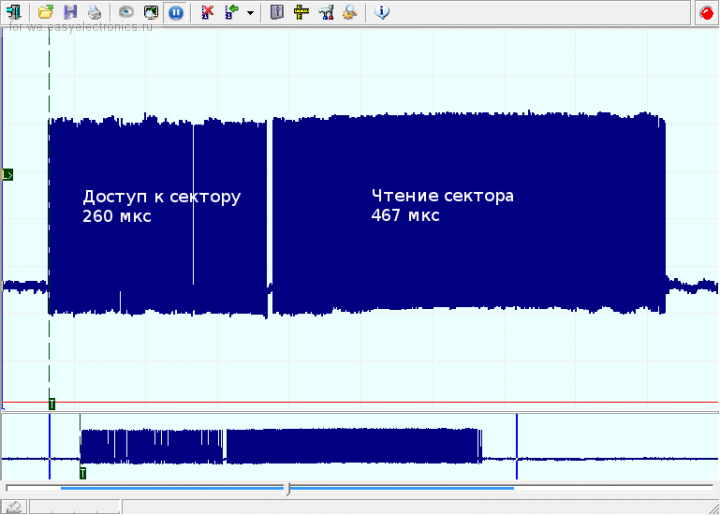
Чтению сектора предшествует операция выбора этого сектора. Причём длительность этого интервала определяется самой картой памяти, драйвер FatFs лишь опрашивает её готовность. Ну а далее выполняется «честное» чтение 512 байт.
Мораль: если нужно максимальное быстродействие, файл необходимо читать блоками максимального размера. Ну собственно, про это и так все знают (или догадываются).
Далее пробуем чтение блоков, невыровненных по границе сектора. Для чего предварительно воспользуемся функцией f_lseek:
Прочитано 10717098 байт за 15`658`188 мкс
Скорость чтения 684 кБ/секСкорость упала, но не существенно. Оказывается, при невыровненном чтении функцией f_read используются результаты предыдущего цикла, которые хранятся в буфере buf файловой структуры FIL. И читать по два сектора каждый раз не нужно, что вполне логично. Значит, при последовательном чтении файла можно особо не беспокоиться о выравнивании порции данных по границе сектора, потери времени будут незначительными.
При рандомном чтении или при использовании опции _FS_TINY читать, конечно, лучше строго по секторам.
Если кто заинтересуется дальнейшими исследованиями, прикладываю проект mp3_player_step3_1.
и наконец, долгожданное…
Декодирование MP3
Формат MPEG layer 3 защищён патентами и до сих пор приносит прибыль его авторам. Потому конторы, купившие лицензии, не спешат делиться с народными массами своими наработками. Но есть и приятное исключение.В далёком 2002 году компания Real Networks предоставила в свободный доступ собственные наработки в традиционной для неё области потокового вещания (см. статью в Компьютерре). Все открытые проекты компания собрала под единым названием «Helix». В частности, были открыты исходники популярного RealPlayer, содержащего в свою очередь, вполне удачный декодер MP3.
На просторах Интернета можно найти ещё несколько бесплатных и открытых декодеров (LibMAD, разработанный примерно в те же годы, есть примеры самодельных плейеров; mpg123 — порта для ARM не видел; ffmpeg — вообще круть, мега аудио-видеокодек, без поллитры не разобраться).
Ну а мы воспользуемся проверенным вариантом — Хеликсом (или, точнее, «Хилексом»).
Настройка декодера
1. Качаем архив с исходниками RealPlayer. Внутри (datatype\mp3\codec\) будет лежать нужный нам декодер. Воспользуемся вариантом, основанным на целочисленной арифметике — папка fixpt.Копируем в наш проект следующие файлы:
\fixpt\pub\*.*и начинаем адаптировать их под наш проект и наоборот.
\fixpt\*.c
\fixpt\real\*.c
\fixpt\real\*.h
1. Декодер использует память ОЗУ, выделяемую из кучи во время инициализации. За выделение памяти отвечает функция AllocateBuffers в модуле buffers.c. Соответственно в нашем проекте нужно реализовать поддержку функций malloc и free.
Можем использовать соответствующие функции библиотеки newlib либо сторонние библиотеки. CoOS в этом вопросе нам тоже может помочь. Для начала нужно включить поддержку памяти и задать размер области, отводимый для кучи:
/*-------------------- Kernel heap Management Config -------------------------*/
// Enable(1) or disable(0) kernel heap management.
#define CFG_KHEAP_EN (1)
// Kernel heap size(word)
#define KHEAP_SIZE (8192) // 8192 слов = 32768 байтРабота с выделяемой памятью в CoOS практически ничем не отличается от стандарного malloc/free, только нужно добавить к названию функций приставку «CoK»:
/* Выделение памяти под 20 int */
unsigned int *ptr = (unsigned int *)CoKmalloc(20*4);
/* Работа с памятью */
...
/* Освобождение памяти */
CoKfree(ptr);Чтобы не ломать исходники декодера-Хеликса, определяем функции в отдельном файле heap.h:
#ifndef HEAP_H_
#define HEAP_H_
#include "CoOS.h"
static inline void* malloc(U32 size)
{
return CoKmalloc(size);
}
static inline void free(void* memBuf)
{
CoKfree(memBuf);
}
#endif /* HEAP_H_ */Если использование выделяемой памяти нежелательно или проблематично, то в Сети можно найти модификацию модуля buffers.c от Kasper Jepsen со статическими переменными.
2. В алгоритме декодирования используется полифазный фильтр. Это одна из наиболее ресурсоёмких функций декодера. Авторы декодера предлагают несколько вариантов реализации функций PolyphaseStereo и PolyphaseMono в зависимости от аппаратного обеспечения.
Во-первых, есть сишная реализация, файл polyphase.c. Однако она заточена под взрослые процессоры x86 (см. ассемблерные вставки MADD64/SHL64/SAR64). Фтопку его.
Во-вторых, для контроллеров ARM необходимые функции полностью написаны на ассемблере. Нам предлагается на выбор для варианта: asmpoly.s и asmpoly_gcc.s, отличающиеся синтаксисом. Судя по названию, нужно использовать второй. Переименовываем расширение файла в «S», чтобы Eclipse воспринял его как ассемблерный файл. И снова проблема. Не переваривает GCC-компилятор этот файл. Видимо,
И ещё один файл asmmisc.s оказался ненужным. Единственная его функция уже описана в модуле assembly.h. Кроме того, inline-функции (в assembly.h) не требуют лишних команд перехода/возврата и поэтому работают заметно быстрее.
На этом этапе настройку декодера можно считать законченной и приступить к его запуску.
API-функции декодера
Все необходимые для работы функции описаны в заголовочном файле mp3dec.h.1. Инициализация декодера
HMP3Decoder MP3InitDecoder(void);2. Деинициализация декодера
void MP3FreeDecoder(HMP3Decoder hMP3Decoder);3. Поиск следующего фрейма
int MP3FindSyncWord(unsigned char *buf, // указатель на буфер данных
int nBytes); // количество данных в буфере
Возвращает позицию первого байта синхрослова (начала фрейма) относительно начала буфера. Возвращает -1, если синхрослово не найдено.
4. Декодирование заголовка следующего фрейма
int MP3GetNextFrameInfo(HMP3Decoder hMP3Decoder,
MP3FrameInfo *mp3FrameInfo,
unsigned char *buf);
- указатель на выделенную память декодера hMP3Decoder;
- указатель на структуру с описанием фрейма mp3FrameInfo;
- указатель на буфер данных с первым байтом заголовка (синхрослово) buf.
5. Декодирование фрейма
int MP3Decode(HMP3Decoder hMP3Decoder,
unsigned char **inbuf,
int *bytesLeft,
short *outbuf,
int useSize);
- указатель на выделенную память декодера hMP3Decoder;
- двойной указатель на буфер с кадром MP3 inbuf;
- указатель счётчика данных во входном буфере bytesLeft;
- указатель на выходной буфер, куда будут помещаться дешифрованные сэмплы outbuf;
- флаг useSize.
Здесь, надеюсь, всё понятно (за исключением флага useSize). Флаг useSize указывает декодеру на использование особого формата упаковки данных RTP (Real-Time Transport Protocol). Для обычных файлов MP3 можно смело указывать useSize=0.
Количество сэмплов (помещаемых в outbuf) на один фрейм фиксировано: для MPEG1 Layer3 оно составляет 1152, для MPEG2/2.5 Layer3 — 576. Сэмплы в буфер outbuf помещаются парами для левого и правого каналов.
6. Чтение параметров последнего фрейма
void MP3GetLastFrameInfo(HMP3Decoder hMP3Decoder, MP3FrameInfo *mp3FrameInfo);Количество семплов левого и правого каналов суммируется. Например, после декодирования фрейма MPEG1 Layer3 в буфере будет лежать 1152*2=2304 сэмплов, а минимально необходимый размер буфера соответственно должен составлять 2304*2=4608 байт.
Подробнее про формат заголовка фрейма и про сам формат MP3 можно немного почитать в Википедии и, например, на Хабре.
Алгоритм декодирования
Перечисленные функции декодера применяем в следующем порядке: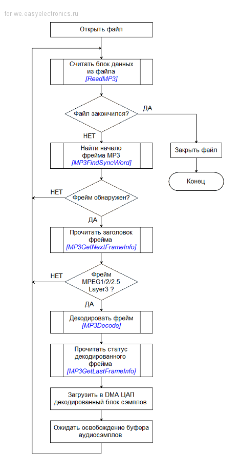
Кстати: формат сэмплов, выходящих из декодера, не подходит для встроенного ЦАП. Декодер даёт знаковые числа -32768..+32767, а ЦАП понимает 0...65535. Поэтому результирующие значения сэмплов перед подачей на ЦАП необходимо сместить на 32768 ед.
Код см. в архиве mp3_player_step3_2.zip. Компилируем, запускаем и анализируем…
При выключенной оптимизации кода (-O0) декодирование требует более 80%, контроллер не справляется с задачей, заикаясь и давясь неоптимизированным кодом. Поэтому обязательно включаем оптимизацию, принося в жертву удобство отладки.
Первый музыкальный фрагмент:
BitRate = 320 kbit/sОсциллограмма работы декодера:
SampleRate = 44100 s/s
CPUspeed = 72 MHz
Compiler Optimization = Os
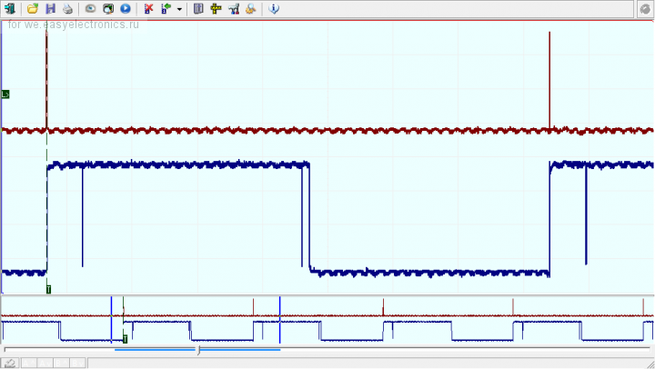
Верхняя трасса — прерывание DMA (освобождение буфера и запрос новых данных). Нижняя трасса отображает время работы MP3-декодера. Результаты курсорных измерений на осциллограмме к сожалению не отображаются, поэтому придётся поверить мне на слово:
- период прерывания DMA 26,1 мс, что соответствует 1152 сэмплам при дискретизации 44100 Гц;
- время чтения данных с карты памяти 1,5-2 мс (за один фрейм «переваривается» 1070 байт);
- время декодирования (функция MP3Decode) 11..13 мс, что составляет примерно 40-50% загрузки контроллера.
Второй музыкальный фрагмент:
BitRate = 128 kbit/s
SampleRate = 44100 s/s
CPUspeed = 72 MHz
Compiler Optimization = Os
- время декодирования уменьшилось на 1 мс (10..12 мс).
Обращаем внимание, что загрузка контроллера при битрейте 320 и 128 кбит/с отличается незначительно.
Третий музыкальный фрагмент:
BitRate = 32 kbit/s
SampleRate = 44100 s/s
CPUspeed = 72 MHz
Compiler Optimization = Os
- длительность декодирования (функция MP3Decode) 7..9 мс, это 30-35% загрузки контроллера.
И в виде графика (указано время выполнения функции MP3Decode в % от 26 мс):
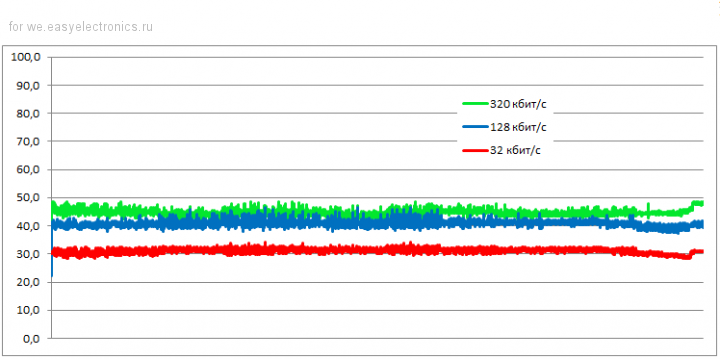
Ну что ж, у нас остаётся ещё примерно 30% свободного процессорного времени. Вполне неплохо. Теперь можно и расслабиться, поморгать светодиодами, нарисовать что-нибудь на LCD-экране, опросить клавиатуру и сделать массу других нужных и ненужных действий.
Продолжаем эксперименты. Воспроизведение файла 320 кбит/с при тактировании 72 МГц (FLASH_LATENCY=2) и 36 МГц (FLASH_LATENCY=0):
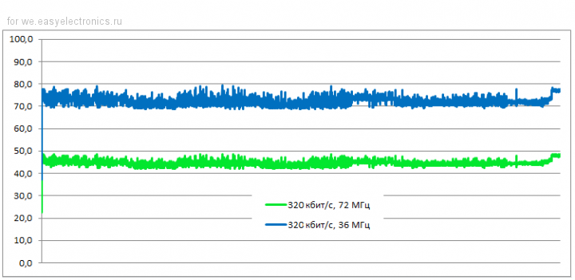
Впритык, но справляется. Оставшиеся 20% ресурсов уходят на чтение файла, обслуживание ЦАП и прочие мелочи.
И напоследок, проверим опции оптимизации компилятора GCC (на файле с битрейтом 32 кбит/с):
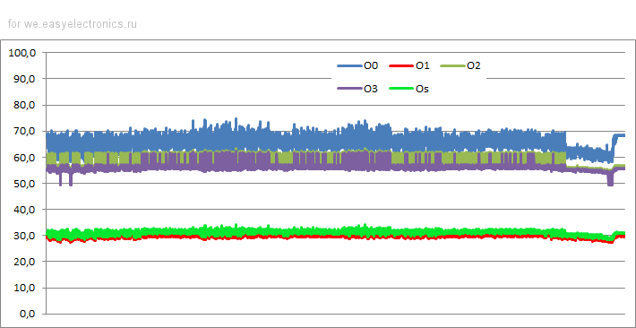
Как видим, опции -O2 и -O3 практически бесполезны. -O1 даёт самый быстрый код, -Os ему мало уступает, экономя однако ещё 10% памяти FLASH. При выключенной оптимизации -O0 контроллер не справится с декодированием высоких битрейтов.
Опции оптимизации: -O0 -O1 -O2 -O3 -Os
Размер кода, % 100 67 63 85 57TODO
1. Изначально данный проект планировался как проигрыватель трекерной музыки, а воспроизведение MP3 стало его побочной функцией. На текущий момент вполне адекватно проигрываются файлы формата MOD. Если Сообщество заинтересуется, можно будет рассмотреть данное направление подробнее.2. Заказал плату STM32F4DISCOVERY. Как придёт, переложу проект на его основу. Интересно будет сравнить его возможности и производительность. Плюс на борту уже имеется аудиоЦАП.
3. Если будет время, можно запустить декодер LibMAD и сравнить его с Helix.
upd
Выкладываю исходники следующей модификации проекта mp3_player_step3_3m.zip. Его отличительные особенности:
- декодирование MP3 вынесено в отдельную задачу;
- реализована задача-проигрыватель, отвечающая за общую координацию работы проигрывателя, открытие/закрытие файлов, инициализацию/запуск/деинициализацию декодера;
- реализована задача опроса клавиатуры; единственная кнопка выполняет функцию «NEXT»;
- добавлена поддержка воспроизведения монофонического звука.
Программа проигрывает файлы из директория "/music", при нажатии кнопки переходит к проигрыванию следующего файла. Воспроизведение файлов осуществляется в порядке их размещения на карте памяти. При необходимости проигрывания файлов по алфавиту необходимо предварительно создать список файлов и отсортировать его. Размер списка будет ограничен количеством свободной RAM-памяти.
upd2
Ещё вариант: предварительно составить на Большом Брате плейлист (с помощью того же винампа) и научить наш плейер играть файлы по порядку из этого листа.
Оглавление
Программный декодер MP3 на STM32F10x. Демопроект (Введение)
Программный декодер MP3 на STM32F10x. Часть 2. Запуск ЦАП
Программный декодер MP3 на STM32F10x. Часть 3. Извлекаем звуки
Программный декодер MP3(+MOD) на STM32F10x. Часть 4. Трекерная музыка
Программный декодер MP3(+). Переход на платформу STM32F407
- +24
- 09 сентября 2013, 19:59
- MikeSmith
- 3
libMAD насколько я помню тут может быть оптимальнее — т.к. заточен на встраиваемые применения.
Я его запускал даже с 8-и битными вычислениями — звук слышно, хоть качество и сильно падает :-)
Я его запускал даже с 8-и битными вычислениями — звук слышно, хоть качество и сильно падает :-)
- BarsMonster
- 09 сентября 2013, 22:31
- ↓
Отличная трилогия, буду ждать продолжения на stm32f4.
И главный для меня вопрос, как оно? качество звучания? Интересно узнать мнение автора =)
И главный для меня вопрос, как оно? качество звучания? Интересно узнать мнение автора =)
Если слушатель не чувствует разницу звучания между кодеками
Fraunhofer и Lame, то звук с данного «недо»аудиоЦАП воспринимается
вполне достойным. В наушниках Philips SHP2500 я не чувствую дискомфорта от недостающих 4 бит. Хотя, конечно, многого ожидать от 12-битного ЦАП не стоит.
Отличная статься.
Подобное под F4 я собирал еще в 2012 году, вот что вышло
Декодер тот же Helix. Проект был позаимствован у одного японца shuji009.blog.eonet.jp/default/2012/03/stm32f4mp32-30df.html
Музыку проигрывает с флешки, качество вполне достойное.
Единственное на мой взгляд использовать внешний ЦАП слишком накладно, уж больно они дорогие. Дешевле воспользоваться VS'кой или другими кодеками. При этом еще и нагрузка на процессор резко снизится :) Самый на мой взгляд оптимальный вариант делать на встроенном АЦП, качество может и похуже, но место и деньги экономит.
Еще раз огромное спасибо за статью, будет время обязательно соберу.
Подобное под F4 я собирал еще в 2012 году, вот что вышло
Декодер тот же Helix. Проект был позаимствован у одного японца shuji009.blog.eonet.jp/default/2012/03/stm32f4mp32-30df.html
Музыку проигрывает с флешки, качество вполне достойное.
Единственное на мой взгляд использовать внешний ЦАП слишком накладно, уж больно они дорогие. Дешевле воспользоваться VS'кой или другими кодеками. При этом еще и нагрузка на процессор резко снизится :) Самый на мой взгляд оптимальный вариант делать на встроенном АЦП, качество может и похуже, но место и деньги экономит.
Еще раз огромное спасибо за статью, будет время обязательно соберу.
нда..., видео не вставляется коментарии не редактируются.
вот то что получилось у меня на stm32f4 youtu.be/DQxFZtrTriU
вот то что получилось у меня на stm32f4 youtu.be/DQxFZtrTriU
Смешно — Первая же ссылка, а их там хоть попой ешь: www.aliexpress.com/item/10PCS-CS4334-SOP-8-Free-shiping-Make-in-china/1309159926.html
А как насчет кодеков с материнок? Доставабельность вполне неплохая,
по цене — вообще нахаляву, интерфейс вроде тот же I2S. Правда,
распространенные реалтековские AC97 кодеки не блистали качеством, но
встречаются и получше варианты.
С доставаемостью действительно не проблема, у меня штук 5 на балконе
лежит. Но я не ставил задачу создания проигрывателя MP3 — конкурировать
по качеству/цене/трудоёмкости изготовления с серийными промышленными
изделиями бесполезно. Просто хотел рассказать, как это можно
сделать на распространённом микроконтроллере. Областью применения
данного проекта считаю разнообразные самодельные устройства, которые
можно обучить «игре» с минимумом аппаратных доработок. Где применение
сторонних чипов VLSI/AC97 нецелесообразно. Ну и трекерную музыку они
играть не умеют.
Но я не ставил задачу создания проигрывателя MP3 — конкурировать по качеству/цене/трудоёмкости изготовления с серийными промышленными изделиями бесполезно.Ну тут как сказать — сделать проигрыватель на дешевом STM32 и выдернутом из материнки кодеке недорого, зато можно кастомизировать под собственные желания, а дешевые китайцы часто отличаются неудобным интерфейсом.
Ну и трекерную музыку они играть не умеют.Ну AC97 вообще ничего играть не умеет, это чисто АЦП+ЦАП. А трекерная музыка создавалась именно под сторонние чипы — аудиочип коммодора, например.
Собственно, меня и самого интересовала тема воспроизведения звука на STM32 — как с применением встроенного ЦАПа, так и с внешним аудиокодеком, желательно с материнки (из соображений цены и доступности).
P.S. Ну и этот ответ, все же, адресовался не тебе.
Собственно, меня и самого интересовала тема воспроизведения звука на STM32
Писал об этом?
Я из темы всего лишь вавку на дискавери через i2s сыграл. Хотел тоже мп3, но руки не дошли, да и кодеки как-то на кейл не рассчитаны, надо их портировать было, а это не очень быстро делается.
- teplofizik
- 11 сентября 2013, 16:26
- ↑
- ↓
Я так понимаю, у автора получилось проигрывать стерео звук.
А вот мне вчера идейка пришла, добавить «простую» схему и «запаралелить» 2 ЦАПа на исходном проце, а второй канал получить точно также, если взять еще самый дешевенький стм32ф100с4, его использовать как цап тоже с «запаралелеными» ЦАПами. Вот уже имеем 24 бита на канал :)
А вот мне вчера идейка пришла, добавить «простую» схему и «запаралелить» 2 ЦАПа на исходном проце, а второй канал получить точно также, если взять еще самый дешевенький стм32ф100с4, его использовать как цап тоже с «запаралелеными» ЦАПами. Вот уже имеем 24 бита на канал :)
- VasiliyBorisenok
- 10 сентября 2013, 17:22
- ↓
Изначально данный проект планировался как проигрыватель трекерной музыки, а воспроизведение MP3 стало его побочной функцией. На текущий момент вполне адекватно проигрываются файлы формата MOD.Почему именно MOD, какие-то еще форматы планируешь? На основе чего сделан трекерный плеер — какой-то готовый движок или свой код?
Зачем тебе потребовался аппаратный трекерный и MP3 плеер?
Будешь ковырять другие форматы сжатия, скажем OGG (к нему прилагается FP-реализация), AAC, FLAC, TTA?
Ух, сколько сразу вопросов.
Почему MOD — тема следующей статьи. Это самый простой формат. «Движок» основан на проекте TRAXMOD + свои доработки. Есть ещё несколько интересных форматов (IT, XM, S3M), но они более требовательны к ресурсам. STM32F10x уже не справится.
Для чего потребовался? См. первую часть статьи: изучение/обучение/приобретение опыта. Конкретной задачи под данный проигрыватель нет.
OGG/AAC/FLAC/TTA и проч. пока не планировал. В сторонних проектах, перечисленных в первой части, попадались такие декодеры, если есть желание помочь — я не против.
Почему MOD — тема следующей статьи. Это самый простой формат. «Движок» основан на проекте TRAXMOD + свои доработки. Есть ещё несколько интересных форматов (IT, XM, S3M), но они более требовательны к ресурсам. STM32F10x уже не справится.
Для чего потребовался? См. первую часть статьи: изучение/обучение/приобретение опыта. Конкретной задачи под данный проигрыватель нет.
OGG/AAC/FLAC/TTA и проч. пока не планировал. В сторонних проектах, перечисленных в первой части, попадались такие декодеры, если есть желание помочь — я не против.
Есть ещё несколько интересных форматов (IT, XM, S3M), но они более требовательны к ресурсам. STM32F10x уже не справится.Разве? Насколько я помню, они все довольно просты, в основе представляют собой микшеры, да и создавались для компов, подчас уступавших по вычислительной мощности STM-кам.
Спасибо за статью.
2. Заказал плату STM32F4DISCOVERY. Как придёт, переложу проект на его основу. Интересно будет сравнить его возможности и производительность. Плюс на борту уже имеется аудиоЦАП.А ещё (если мне не изменяет память) и набор инструкций для цифровой обработки. Но это надо асм курить, если готового порта нет.
При необходимости проигрывания файлов по алфавиту необходимо предварительно создать список файлов и отсортировать его. Размер списка будет ограничен количеством свободной RAM-памяти.Не обязательно. Если допустим «затык» на время переключения от песни к песне, то следующий файл искать в момент переключения. Ищем минимальное имя, больше предидущего — памяти минимум, однако надо перечитывать весь каталог.
Конечно, заманчиво тот же самый полифазник реализовать при поддержке
DSP. Выигрыш в производительности должен быть существенным.
«Затык» при переключении недопустим, проигрыватель будет слишком «тормозным». Такое поведение обычно сильно напрягает. Но у нас есть масса времени во время воспроизведения. Можно запустить параллельный процесс сканирования директории и составления небольшого сортированного списка файлов. Задача вполне реализуема.
«Затык» при переключении недопустим, проигрыватель будет слишком «тормозным». Такое поведение обычно сильно напрягает. Но у нас есть масса времени во время воспроизведения. Можно запустить параллельный процесс сканирования директории и составления небольшого сортированного списка файлов. Задача вполне реализуема.
Теоретически можно ли так оптимизировать или взять другой декодер,
чтобы проект работал при 20 кб памяти? Из статьи понял, что под буферы
можно взять 5 кб, ну и часть пойдет под рассчеты. Лежит 10 камней
F103C8T6 (20 кб рам, 64 кб флеш, 72 мгц тактовая), хотелось бы их
заюзать (когда брал, то посмотрел, что производительности для mp3
достаточно).
Нет, слишком мало памяти. Можно отказаться от файловой системы,
операционки, но и это не поможет. Сам Helix требует 23816 байт ОЗУ, для
ЦАП обязательно нужно два буфера (4608*2 или в два раза меньше для
моно). Программно декодировать MP3 имеет смысл при наличии памяти
начиная с 48 кБ.
Не буду утверждать насчёт других декодеров, но например TRAXMOD (с декодером LibMAD) реализован на PIC-контроллере с ОЗУ 128 кБ.
Внешнюю память к F103C8T6 прикрутить тоже не получится, нет FSMC. Поэтому предлагаю использовать указанные контроллеры для других поделок. Либо, если очень хочется MP3, использовать VLSI.
Не буду утверждать насчёт других декодеров, но например TRAXMOD (с декодером LibMAD) реализован на PIC-контроллере с ОЗУ 128 кБ.
Внешнюю память к F103C8T6 прикрутить тоже не получится, нет FSMC. Поэтому предлагаю использовать указанные контроллеры для других поделок. Либо, если очень хочется MP3, использовать VLSI.
Понятно. Спасибо за ответ. Аппаратный декодер не так интересен, с
этой черной магической коробочкой и чуть ли не тинька будет играть. А уж
WAV и тем более тинька без обвеса потянет, благо декодировать нечего.
Реализовывать софтово более интересно на мой взгляд, чем применение
готовых аппаратных решений (тем более, что 72 мгц арма достаточно, а
стоят то пару баксов. жаль, что с озу пролет.). Хеликс эти 23 кбайта
полностью тратит на декодирование? Просто сложилось впечатление, что
половину под буффера уходит и можно просто их урезать и вписать моно
вариант в 20 кб.
Почем вы вообще брали STM32F105RC? На алиэкспресс цены около 8$, но штуку ради мп3 можно взять (а партиями их и вовсе не продают), хоть и кусается цена (с другой стороны для поделок STM32F105RC слишком жирный будет, F103C8T6 должно хватать, если уж баксовая мега8 не справится). Интересно что пихают в китайские microsd плеера, которые продают по 2-3 бакса бывает.
Почем вы вообще брали STM32F105RC? На алиэкспресс цены около 8$, но штуку ради мп3 можно взять (а партиями их и вовсе не продают), хоть и кусается цена (с другой стороны для поделок STM32F105RC слишком жирный будет, F103C8T6 должно хватать, если уж баксовая мега8 не справится). Интересно что пихают в китайские microsd плеера, которые продают по 2-3 бакса бывает.
Хеликс эти 23 кбайта полностью тратит на декодирование?Вероятно да. Лишних «висячих» буферов не замечено. Также вероятно, что можно немного уменьшить аппетиты путём урезания возможностей и качества работы. Но оно того не стоит. Лишние 2-3-4 бакса для разовой поделки не так и много. Гораздо дороже время, которое нужно будет потратить на запуск «обрезанного» декодера.
Контроллер установил тот, который был в наличии.
Интересно что пихают в китайские microsd плеера, которые продают по 2-3 бакса бывает.8-битный МК со встроенными декодером, аудиокодеком и контроллерами SD/USB/NAND флешек. Плюс прочая нужная для плеера периферия, вроде встроенной системы питания, контроллера дисплея и так далее. Специализированный SoC, короче.
Опционально МК может быть и покруче, но в самых дешевых — простенькие 8-битки.
Впрочем, найти вменяемый даташит на них затруднительно. Иногда даже просто описание чипа нагуглить не удается. Китайцы…
Безусловно. Да и даже с описанием, но без тулсета они безполезны. Так
что рассчитывать на микры для китайских плееров не стоит. Как и на
возможность перепилить такой плеер под себя в программном плане (хотя
это было бы заманчиво, уж больно косые да убогие там прошивки)
рассчитывать не стоит.
Ну фоторамки вон пилят же. Там есть какая-то с мп3 декодером. Так что
и плееры можно будет добить, было бы желание. Но основная подстава там —
однократно-программируемые чипы — это обойти как-бы сложно :)
Извиняюсь за жуткий баян: Взлом цифровых рамок.
AX206 допилили. Есть jpeg декодер (какойто свой) и ацп, uart, spi, pwm,
usb, 8бит 8051. Тулчейн ставил, но не довелось. Цена вопроса ~$5 за
рамку.
Из той же серии есть более продвинутые чипы (SDIO/mp3/jpeg/lvds). Ссылка на схему тоже канула, к сожалению. Цена у них повыше только :)
Вообще DPF и hack всё гуглилось.
Из той же серии есть более продвинутые чипы (SDIO/mp3/jpeg/lvds). Ссылка на схему тоже канула, к сожалению. Цена у них повыше только :)
Вообще DPF и hack всё гуглилось.
Нет его по даташиту, да. Но вообще не особо разбираюсь в сортах
ЦАПов, да и не требую Hi-Fi качества от поделок, пойдет и ШИМ (вроде
тоже вариант реализации ЦАП, да и даже R-2R чем не ЦАП). Проигрывают же
на avr'ках wav без всяких ЦАПов с помощью ШИМа. Разве что презираю R-2R,
ибо разброс резисторов все портит, их подбирать нужно (хотя ковокс,
собранный из резисторов одного номинала, вполне годен, но из мк имхо
можно выжать и лучше качество).
![[x]](soft_mp3_encoder_files/lock.png "Закрытый блог")
Комментарии (55)
RSS свернуть / развернуть